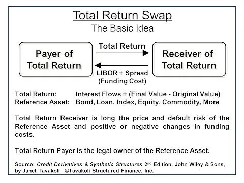

Definition
A Total Return Swap is a financial derivative contract between 2 party where the 2 party agree to exchange, at periodic dates, 2 cash flows. The buyer of the TRS agrees to receive the total performance of an asset or a basket of asset in exchange of paying a reference rate. Note that if the performance of the underlying is negative, the buyer is obliged to pay the value.
Here is a visual representation of flow exchanged in a TRS:

Here is another visual representation of flow exchanged in a TRS:
\(\textit{The Equity Amount reflects the P&L of a long position in the underlying index. The floating rate amount reflects financing cost of the underlying index.}\)
It is important to note that TRS are funding cost arbitrages products.
Advantages
- TRS allow an investor to enjoy all of the cash flow benefits of a security without actually owning the security,
- TRS are off balanced sheet asset (the asset owner retains ownership of the asset): an institutional investor who has surpassed its balance sheet capacity may still speculate (or hedge) through a TRS,
- TRS are leveraged derivatives: hedge fund can use TRS to take leveraged positions,
- Investors can create new assets with a specific maturity not currently available in the market,
- Investors can reduce administrative costs via an off balance sheet purchase,
- A long-term investor who feels that a reference asset in portfolio may widen in spread in the short term, but then will recover, may enter into a TRS which is shorter than the maturity of the asset.
\[\begin{cases}
\text{Leg}_{\text{Total Return}} && = N * \left(\sum_{i=1}^{T} \left[(S_{t_i} - S_{t_{i-1}}) + D_{(t_{i-1}, t_i)}\right] * DF_{t_i}\right)\\
\text{Leg}_{\text{Floating}} && = N * \left(\sum_{i=1}^{T} \left[S_{t_{i-1}} * e^{(r_{(t_{i-1}, t_i)} - s)(t_i - t_{i-1})} \right] * DF_{t_i}\right)
\end{cases}\]
With:
- \(N\) being the notional of the TRS,
- \(S_{t_0}\) being the spot price of the underlying equity,
- \(S_{t_i}\) being the futur price of the underlying equity as seen at \(t_0\),
- \(D_{(t_{i-1}, t_i)}\) being the dividend received during the period between \(t_{i-1}\) and \(t_i\),
- \(DF_{t_i}\) being the risk free Discount Factor at time \(t_i\),
- \(r_{(t_{i-1}, t_i)}\) being the risk free rate for the time period between \(t_{i-1}\) and \(t_i\),
- \(s\) being the spread over the risk free rate (inverse of the repo rate spread - which is quoted inverted),
- \(r_{(t_{i-1}, t_i)}-s\) being the financing rate.
The spread is the rate over the reference interest rate that a buyer (receiver) of total returns must pay to the seller (payer) and of which repo rate is the key driver. If the holder of a cash basket can receive income from repo of the underlying stocks then equally the buyer (receiver) of an equity index TRS would expect the spread to be subtracted from the financing cost.
Implied repo
Implied repo can be easily obtained if different market values are known:
- The risk free rate curve and the associated discount factors,
- The spot and forward values of \(S\).
Ressources:
See: